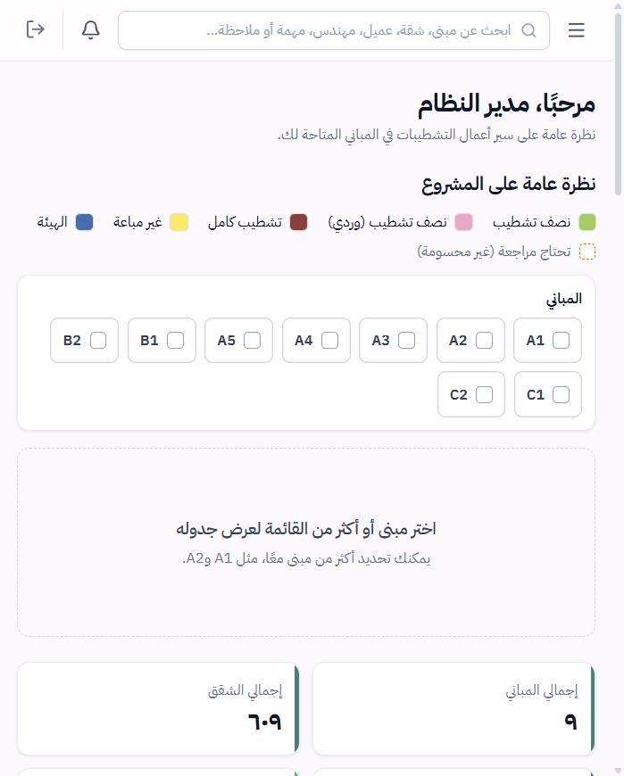
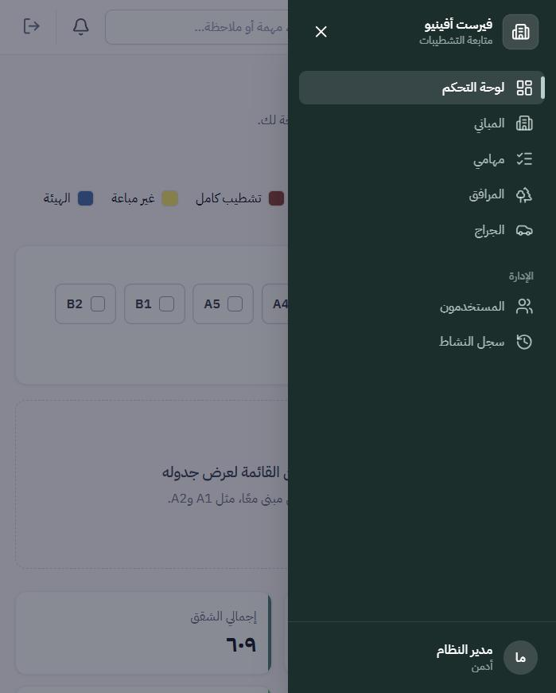
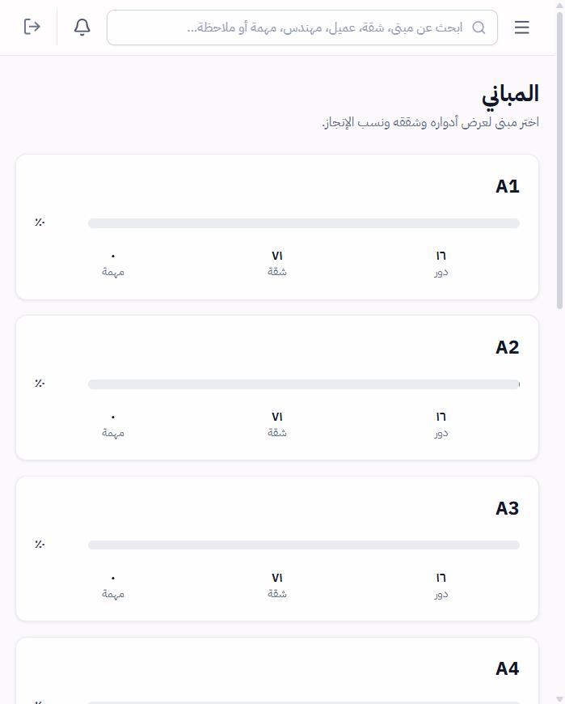
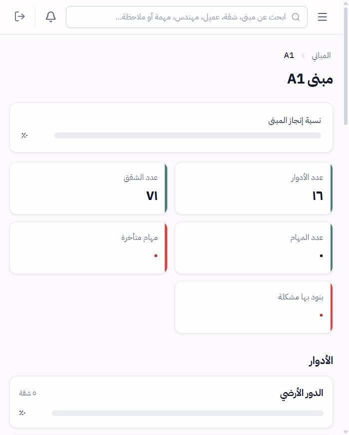
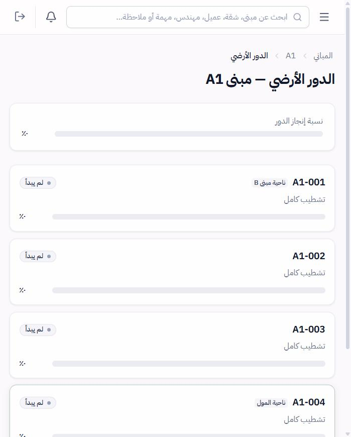
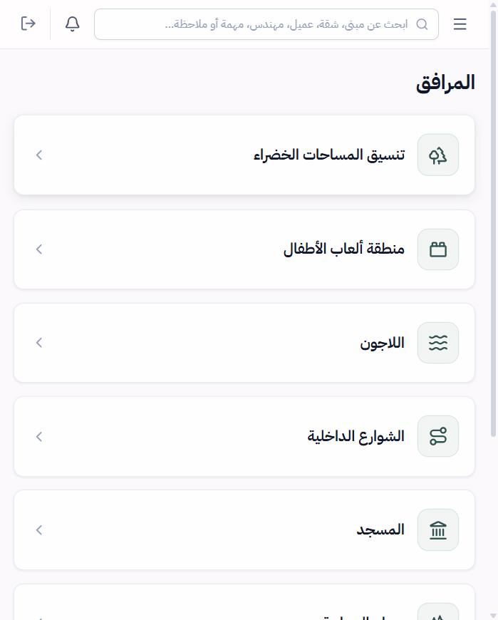

The Problem
A compound with hundreds of apartments means thousands of finishing steps — plastering, plumbing and electrical first-fix, carpentry, painting, and more — each at a different stage and handled by different engineers. Tracking that in spreadsheets and chat threads makes it hard to know what is actually done, what is stuck, and what is due soon.
This tracker puts the whole compound in one system. Every building, floor, apartment, and finishing item has a status, so progress rolls up automatically into completion percentages that the team can read at a glance.
Core Features
Project Dashboard
A project-wide overview with overall completion, plus task counts by status — completed, in progress, not started, has a problem, overdue, and due soon — and progress for each building.
Buildings, Floors & Apartments
Drill down from a building to its floors to each apartment. Every level shows its own completion bar, so a delay is easy to trace to its source.
Finishing Checklist
Each apartment carries a finishing-item checklist — plaster, plumbing, electrical and drainage first-fix, painting, carpentry, and more — with done / not done status, start and end dates, and duration.
Apartment Records
Apartment type, responsible engineer, ownership, sale status, and unit specifications live next to the work, with tabs for overview, rooms, finishing items, tasks, and notes.
Facilities & Garage
Shared compound areas are tracked too — landscaping, children's play area, lagoon, internal streets, mosque, and more — with a Garage section alongside them.
Team & Accountability
Personal task lists, notifications, global search across buildings, apartments, clients, engineers, tasks, and notes, user management, and an activity log of who changed what.
Compound Coverage
The dashboard colour-codes every unit by finishing type and ownership, across nine buildings:
Walkthrough

Dashboard — a project-wide overview with a building selector and a colour legend for finishing types.

Navigation — dashboard, buildings, personal tasks, facilities, and garage, plus admin tools for users and the activity log.

Buildings — every building with its completion bar, floor count, apartment count, and task count.

Building overview — floors, apartments, tasks, overdue work, and items flagged with a problem.

Floor view — each apartment on the floor with its status, finishing type, and progress.
Apartment record — type, responsible engineer, estimated progress, ownership, and sale status in one place.
Finishing checklist — per-item status with start and end dates, rolling up into the apartment's completion.

Facilities — shared compound areas tracked alongside the apartments.
Private by Design
This is an internal tool for the project team, so it sits behind a login and there is no public demo. The screens above are from the live app.